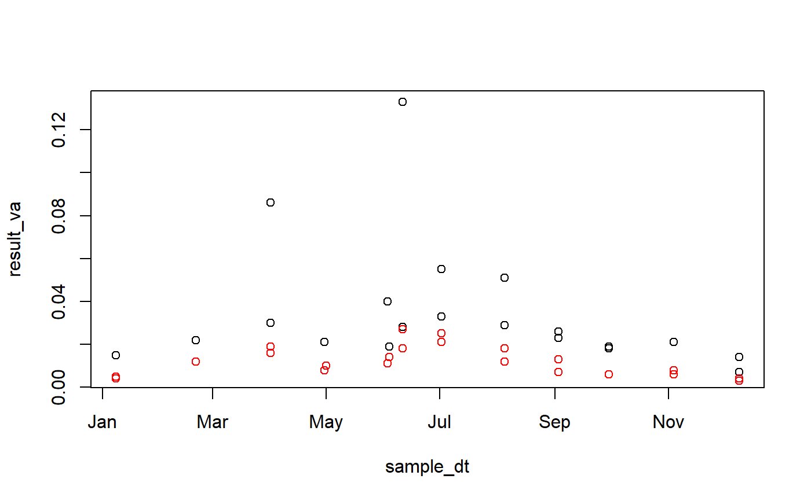

Selected water-quality data for Judicial Ditch 64 near Mentor, Minnesota (SW4), USGS station number 05078470 for calendar year 2003.
From smwrData.
QWstacked
Data frame with 46 rows and 22 columns
| Name | Type | Description |
| agency_cd | character | |
| Agency code | site_no | character |
| USGS station number | sample_dt | Date |
| Sample date | sample_tm | character |
| Sample time | sample_end_dt | Date |
| Sample end date | sample_end_tm | character |
| Sample end time | sample_start_time_datum_cd | character |
| Time zone datum | tm_datum_rlbty_cd | character |
| Time datum reliability code | coll_ent_cd | character |
| Collecting agency code | medium_cd | character |
| Sample medium code | tu_id | character |
| Taxonomic unit code | body_part_id | character |
| Body part code | parm_cd | character |
| Analyte parameter code | remark_cd | character |
| Remark code for the result | result_va | character |
| Numeric value of the result | val_qual_tx | character |
| Result value qualifier code | meth_cd | character |
| Lab method code | dqi_cd | character |
| Data-quality indicator code | rpt_lev_va | character |
| Reporting level | rpt_lev_cd | character |
| Reporting level type | lab_std_va | character |
| Lab standard deviation | anl_ent_cd | character |
Note: all concentrations in the
column result_va are in milligrams per liter as phosphorus.
Data retrieved from NWISWeb (https://nwis.waterdata.usgs.gov/mn/nwis/qwdata) on 2012-04-06. The format of water-quality data is often retrieved by result--each row represents the data for a single analyte. Note that many columns are part of the generic data retrieval and do not pertain specifically to these data.
data(QWstacked) # Plot the data for whole-water phosphorus with(subset(QWstacked, parm_cd == "00665"), plot(sample_dt, result_va))# Overlay the data for dissolved phosphorus (should be smaller values) with(subset(QWstacked, parm_cd == "00666"), points(sample_dt, result_va, col='red'))